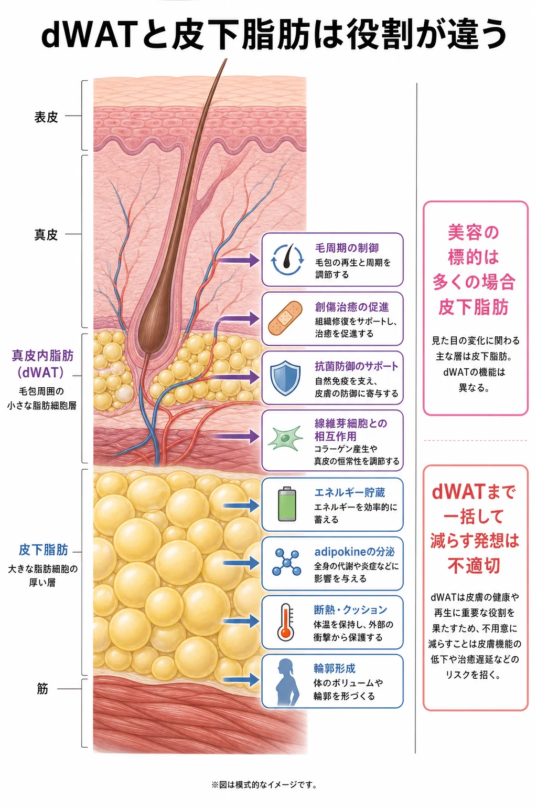
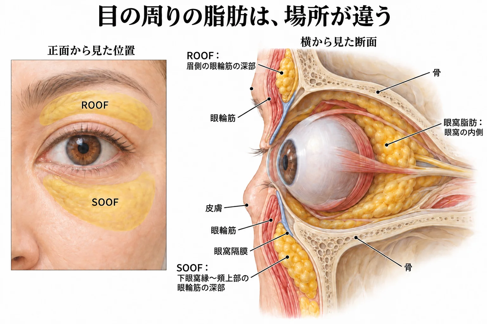
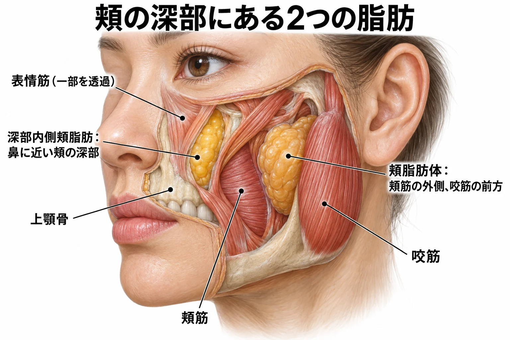
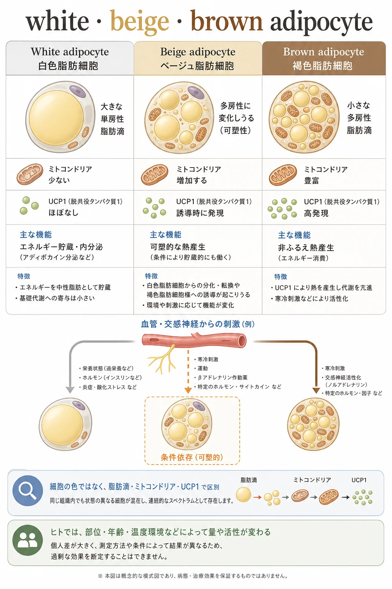
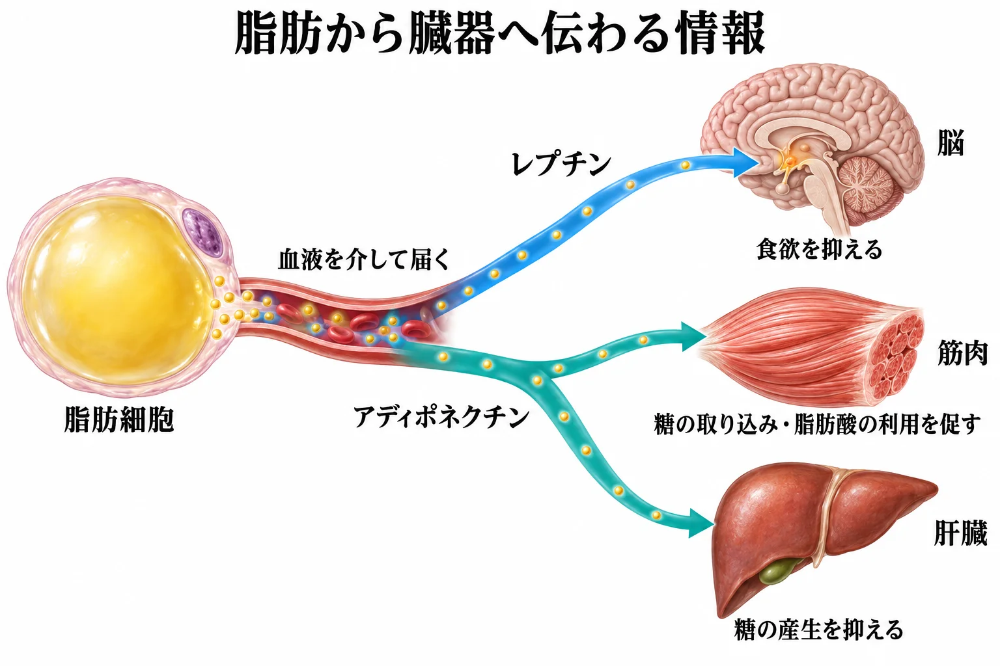
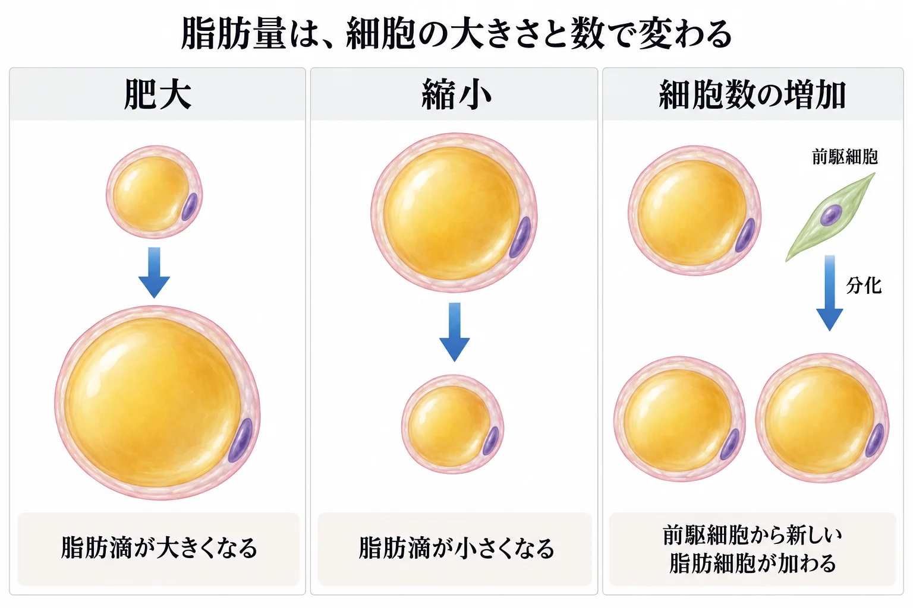

美容皮膚科 ／ 組織の生化学
脂肪
公開 2026-10-06
顔の脂肪は、頬の膨らみや顔の立体感を形づくります。その脂肪を構成する細胞は、エネルギーを蓄えるとともに、ホルモンやサイトカインを分泌し、皮膚や全身の代謝にも作用しています。脂肪の量や形の変化を理解するには、こうした細胞の働きも知る必要があります。
脂肪酸をエネルギーとして利用する経路は脂肪酸とケトン体、脂肪を減らす治療の機序は脂肪を減らす治療で扱います。
この章の一言
脂肪の働きは、量だけでなく、どこにあり、細胞がどのような状態にあるかによって変わります。
1 脂肪を蓄える細胞と、それを支える組織
脂肪細胞（adipocyte）は、細胞内の脂肪滴に中性脂肪を蓄えます。食後には貯蔵が進み、空腹時などには中性脂肪を分解して脂肪酸を血中へ放出します。食事を摂っていない間も、他の組織が燃料を利用できるのは、この貯蔵があるためです。
脂肪組織には、血管や神経、免疫細胞、脂肪細胞になる前の前駆細胞もあります。細胞外基質（ECM）が細胞の周囲を支え、血管が酸素や栄養を届けます。脂肪組織全体が皮膚の下で輪郭を形づくり、外力を和らげます。
皮膚に近い脂肪は、毛包や修復にも関わる
皮膚の近くにある脂肪は、輪郭の形成に加え、毛包や皮膚の修復にも関わります。この皮膚との関係に注目して研究されているのが、dWAT（dermal white adipose tissue：真皮白色脂肪組織）です。真皮や毛包と関係の深い白色脂肪組織を指します。

マウスでは皮筋を境に皮下脂肪と明瞭に分かれますが、ヒトでは同じような独立した層として区切れるわけではありません。ヒトの皮膚を考えるときは、毛包周囲などにある脂肪と皮膚との相互作用に注目します（研究原著）。
脂肪細胞やその前駆細胞は、皮膚の維持にも参加します。マウスの研究では、脂肪細胞の前駆細胞が毛包幹細胞の活性化を支えること、感染時には脂肪細胞への分化に伴って抗菌ペプチドのカテリシジン（cathelicidin）が産生されることが示されています。創傷治癒でも、脂肪細胞からの脂肪酸の放出が炎症細胞の応答や修復に関わります（PMID 21884937、PMID 25554785、PMID 32302523）。
皮膚に近い脂肪は、皮膚を下から支えるだけでなく、毛包や免疫細胞へ働きかける組織でもあります。
2 顔の脂肪は、部位ごとに輪郭を支える
顔の脂肪は一様な層ではなく、線維性の隔壁などで区切られたコンパートメント（fat compartment）として分布しています。脂肪がどこに、どのくらい存在するかが、頬の膨らみや顔の立体感に関わります（PMID 17519724）。
浅層と深層は、筋を目印にすると分かりやすい
頬では、皮膚に近い側に浅層脂肪があり、その深部に表情筋やSMAS（superficial musculoaponeurotic system：浅筋膜系）があります。さらに筋の深部にも脂肪が分布します。SMASは顔面の筋・腱膜性の構造で、筋や脂肪との位置関係は部位によって変わります。
| 層 | 位置と役割 | 代表的な部位 |
|---|---|---|
| 浅層脂肪 | 主に皮膚と浅筋膜系（SMAS）の間にあり、皮膚表面の輪郭に関わる | 頬、鼻唇溝周囲、下顎縁のジョールの脂肪など |
| 深層脂肪 | 表情筋の深部などに分布し、顔の立体的なボリュームを構成する | 深部内側頬脂肪（deep medial cheek fat）、眼輪筋下脂肪（SOOF）、頬脂肪体など |
SOOFは目の下、ROOFは眉側の眼輪筋の深部にある
眼輪筋は、目の周囲にあり、まぶたを閉じる筋です。その深部にある脂肪のうち、下眼窩縁から頬上部に分布するのがSOOF（suborbicularis oculi fat：眼輪筋下脂肪）です。皮膚のすぐ下ではなく、眼輪筋と骨膜の間にある、線維組織を含んだ脂肪です。
眉から上眼瞼側で、眼輪筋・前頭筋の深部にあるのがROOF（retro-orbicularis oculi fat：眼輪筋後脂肪）です。眉側では骨膜より浅く、上眼瞼側では眼窩隔膜より前方に位置します（眼周囲の脂肪の解剖研究、ROOFの解剖研究）。
眼窩脂肪は、眼窩の内側で眼球を取り囲む脂肪です。まぶた側では、眼窩隔膜という薄い膜の後方にあります。SOOFやROOFは眼輪筋の深部で、眼窩隔膜や骨膜より浅い位置にあります。

頬の深部には、深部内側頬脂肪と頬脂肪体がある
深部内側頬脂肪（deep medial cheek fat）は、鼻の脇から頬の内側にある脂肪の区画です。上唇挙筋などの表情筋より深く、上顎骨の前に位置します。目の下のSOOFに隣接し、頬の前方への膨らみを構成します（PMID 18520902、PMID 19730316）。
頬脂肪体（buccal fat pad）は、筋の間を複数の方向へ伸びる脂肪です。頬側の部分は、頬の内側の壁を作る頬筋の外側、咬筋の前縁付近にあります。深部内側頬脂肪より外側・後方に位置し、頬の皮膚直下にある浅層脂肪とも別の構造です（PMID 10982997、頬脂肪体と筋の位置関係の研究）。

加齢で変わるのは、脂肪の量と分布
加齢に伴い、腹部では内臓脂肪が増える傾向がある一方、顔では容積が減る部位が目立つようになります。脂肪の加齢変化は全身で一様ではなく、部位によって異なります。 内臓脂肪の蓄積には、性別や閉経、体重の変化も関わります（PMID 8044194）。
顔の中でも、コンパートメントによって容積の変化は異なります。中顔面の浅層・深層ともに減少した縦断研究がある一方、若年者と高齢者を比較したMRI研究では、頬の一部で高齢者の脂肪容積が大きいことも報告されています。さらに、脂肪の位置や区画内での分布も変わります（PMID 33165293、PMID 15793457、PMID 21915077）。
そのため、頬の陥凹と下顔面の膨らみが同時に目立つことがあります。膨らみが目立つ部分では、脂肪そのものの増加と、位置・分布の変化を分けて考えます。 骨、靱帯、皮膚の変化も、脂肪の支持や顔の輪郭に関わります（→ たるみの多層構造）。
コラム：眼窩脂肪は、なぜ部位によって色が違うのか
上眼瞼の脂肪は、中央の腱膜前脂肪（preaponeurotic fat）では黄色く、内側の鼻側脂肪（nasal fat）では白っぽく見えます。この違いには、脂肪に含まれるβカロテンやルテインなどのカロテノイドが関係します。
眼瞼手術で採取した脂肪を分析した研究では、腱膜前脂肪のβカロテンとルテインは、鼻側脂肪の約4倍でした。黄色みの違いを説明する成分として、これらの色素が挙げられています（PMID 11405838）。
βカロテンはビタミンAの前駆体ですが、黄色い色素そのものはカロテノイドです。ここで見ているのは白色脂肪組織の中での色の違いで、熱産生を担う褐色脂肪との区別とは異なります。
3 白色脂肪は蓄え、褐色・ベージュ脂肪は熱を作る
脂肪細胞には、主に中性脂肪を蓄える白色脂肪細胞（white adipocyte）と、熱産生に適した褐色脂肪細胞（brown adipocyte）があります。白色脂肪組織の中には、寒冷刺激などに応じて熱産生能を高めるベージュ脂肪細胞（beige adipocyte）も現れます。
詳しく：褐色・ベージュ脂肪の熱産生とbeiging
熱産生を理解する鍵が、ミトコンドリア内膜のUCP1（uncoupling protein 1）です。電子伝達系が作ったH⁺（プロトン）の濃度差に沿って、H⁺をATP合成酵素を通さずに戻します。その結果、燃料を酸化して得たエネルギーが熱として放出されます（→ 電子伝達系）。

成人でも、頸部や鎖骨上部などに熱産生を行う脂肪組織があり、寒冷刺激によって活性化されることが確認されています（PMID 19357407）。
beigingは、熱産生能を持つ細胞が増える変化
白色脂肪組織の中で、UCP1を発現するベージュ脂肪細胞が増えることをbeigingと呼びます。マウスの研究では、前駆細胞から新たに分化する経路に加え、熱産生を止めて白色脂肪細胞に似た状態になった細胞が、寒冷刺激で再び熱産生を行うことも示されています（Wuら, 2012、Rosenwaldら, 2013）。
beigingでは熱産生能が高まり、脂肪分解では蓄えた中性脂肪が分解されます。脂肪細胞死では、細胞そのものが失われます。
熱産生を調節する分子
寒冷時には交感神経の刺激が脂肪細胞に伝わり、脂肪分解と熱産生が促されます。熱産生型の性質の形成にはPRDM16、ミトコンドリアの量や代謝機能の調節にはPGC-1αなどが関わります。図中にある運動やホルモンの作用は、動物種・部位・条件によって異なります。
4 脂肪からの分泌は、代謝と炎症に関わる
脂肪組織から分泌される因子をアディポカイン（adipokine）と呼びます。脂肪細胞が作るホルモンに加え、免疫細胞などが作るサイトカインも含まれます。血液を介して離れた臓器に作用するものも、周囲の細胞に作用するものもあります。

| 分泌因子 | どこに作用し、何が起こるか | 脂肪組織の状態との関係 |
|---|---|---|
| レプチン（leptin） | 視床下部に作用し、食欲を抑える。体内のエネルギー貯蔵量を脳に伝えるシグナルとなる | 脂肪量が増えると血中濃度は上昇するが、肥満では反応が低下し、十分な食欲抑制につながらないことがある（レプチン抵抗性） |
| アディポネクチン（adiponectin） | 筋で糖の取り込みや脂肪酸の酸化を促し、肝で糖の産生を抑える。インスリンが効きやすい状態を支える | 肥満、とくに内臓脂肪の蓄積に伴って低下する傾向がある |
| TNF-α | 炎症反応を促すとともに、インスリンの細胞内シグナルを妨げ、インスリン抵抗性の一因となる | 肥満に伴う脂肪組織の炎症では、マクロファージなどが産生する |
| IL-6 | 肝臓でCRPなどの急性期タンパクの産生を促すなど、炎症時の全身応答に関わる | 脂肪組織の炎症でも産生が増える。運動時の筋由来IL-6とは、分泌の持続や作用する状況が異なる（→ 筋肉） |
| MCP-1（CCL2） | 血中の単球を脂肪組織へ誘導し、マクロファージの集積を促す。集積した細胞が炎症性因子を産生し、炎症が続く一因となる | 脂肪細胞や脂肪組織内の免疫細胞などが産生する |
根拠となる研究
レプチンによる摂食抑制は、レプチン欠損マウスなどへの投与実験で示されました（PMID 7624777）。アディポネクチンによる糖利用・脂肪酸酸化の促進と肝糖産生の抑制は、細胞・動物実験で検討されています（PMID 12368907）。
TNF-αがインスリンのシグナルを妨げる機序は培養脂肪細胞などで、MCP-1によるマクロファージ集積とインスリン抵抗性への関与はマウスで示されています（PMID 8571133、PMID 16691291）。IL-6によるCRPなどの増加はヒトへの投与研究でも確認されています（PMID 7554393）。
脂肪の部位によっても、分泌は異なる
皮下脂肪と内臓脂肪では、分泌因子の産生量や、その影響が及ぶ経路が異なります。 例えば、肥満者から採取した脂肪組織の比較では、皮下脂肪の方が大網脂肪よりレプチンの分泌が多いことが報告されています（PMID 9725819）。また、腸間膜・大網の脂肪から放出された因子は門脈を介して肝臓へ届きます。皮膚に近い脂肪では、毛包や線維芽細胞、免疫細胞との局所の相互作用も重要です。
脂肪組織が炎症を起こすと、分泌も変わる
脂肪の蓄積が進むと、細胞の肥大に加えて、血流やECM、免疫細胞の構成も変化します。肥満に伴う脂肪組織ではマクロファージが増え、炎症性因子の産生に関わります。ヒトとマウスで、この集積と脂肪細胞の大きさとの関連が示されています（PMID 14679176）。
同じ部位の脂肪でも、細胞の肥大や免疫細胞の集積に伴って、分泌する因子の量や組み合わせが変わります。炎症性因子の増加は、インスリンが効きにくくなる一因です。
詳しく：脂肪組織とエストロゲン
脂肪組織の間質細胞などには、アンドロゲンをエストロゲンへ変換する酵素アロマターゼ（aromatase）があります。とくに閉経後は、脂肪組織を含む末梢組織で作られるエストロゲンが、その供給源になります。アロマターゼはホルモンを合成する酵素で、分泌因子とは区別します。
5 脂肪組織には、血管と前駆細胞がある
脂肪組織の血管は、酸素や栄養を供給し、放出された脂肪酸や分泌因子を運びます。血管の周囲などには、増殖して脂肪細胞へ分化できる細胞も存在します。
脂肪組織から成熟脂肪細胞などを除いて得られる細胞の集まりを間質血管細胞群（stromal vascular fraction：SVF）と呼びます。血管内皮細胞や免疫細胞、前駆細胞などが含まれ、この中から培養して得られるのが脂肪由来間質・幹細胞（adipose-derived stromal/stem cells：ASC／ADSC）です（PMID 23570660）。
これらの細胞は、増殖因子やサイトカイン、細胞外小胞を分泌します。脂肪由来細胞の培養上清は、その培養液に含まれる分泌物などを利用するもので、脂肪組織や細胞そのものとは異なります（→ エクソソームと幹細胞培養上清）。
血流と細胞の補充は、脂肪移植後の細胞の生存や組織の再構築にも関わります。
6 脂肪量は、細胞の大きさと数によって変わる
脂肪組織の容積が変わるとき、細胞内の脂肪滴が大きくなる場合と、脂肪細胞の数が増える場合があります。同じ容積の増加でも、細胞の肥大と細胞数の増加では、組織の中で起きていることが異なります。

| 変化 | 細胞に起こること |
|---|---|
| 肥大 | 一つの脂肪細胞に蓄える脂質量が増え、細胞が大きくなる |
| 縮小 | 蓄えた脂質が利用され、細胞が小さくなる |
| 細胞数の増加 | 前駆細胞が増殖・分化し、成熟脂肪細胞が増える |
| 細胞の喪失 | 細胞死や組織の除去によって、脂肪細胞が失われる |
成人の脂肪細胞も入れ替わっています。ヒトの研究では年間約10％が更新され、減量後も細胞数が比較的保たれることが示されました。一方、過栄養によって下半身の皮下脂肪細胞数が増えた研究もあり、成人でも、部位や栄養状態によって細胞数は変わります（PMID 18454136、PMID 20921416）。
細胞が小さくなることと、細胞や周囲の組織が失われることでは、その後に容積が変化する仕組みも異なります。顔では脂肪の配置が輪郭に関わるため、量の増減に加えて、どの部位で、細胞や組織にどのような変化が起きたかを考えます。
この章の到達点
- 脂肪組織の役割を、エネルギー貯蔵、輪郭・保護、分泌から説明できます。
- 皮膚に関連する脂肪、皮下脂肪、内臓脂肪を区別し、顔では区画ごとの配置に注目できます。
- 白色・褐色・ベージュ脂肪細胞の違いを、貯蔵と熱産生から説明できます。
- 脂肪の肥大と炎症、分泌の変化を関連づけて理解できます。
- 細胞の大きさの変化、前駆細胞からの補充、細胞の喪失を区別できます。
中核参考文献
- Spalding KL, et al. Dynamics of fat cell turnover in humans. Nature. 2008. PMID 18454136.
- Tchoukalova YD, et al. Regional differences in cellular mechanisms of adipose tissue gain with overfeeding. PNAS. 2010. PMID 20921416.
- Rohrich RJ, Pessa JE. The fat compartments of the face: anatomy and clinical implications for cosmetic surgery. Plast Reconstr Surg. 2007. PMID 17519724.
- Gierloff M, et al. Aging changes of the midfacial fat compartments: a computed tomographic study. Plast Reconstr Surg. 2012. PMID 21915077.
- Festa E, et al. Adipocyte lineage cells contribute to the skin stem cell niche to drive hair cycling. Cell. 2011. PMID 21884937.
- Zhang LJ, et al. Dermal adipocytes protect against invasive Staphylococcus aureus skin infection. Science. 2015. PMID 25554785.
- Shook BA, et al. Dermal adipocyte lipolysis and myofibroblast conversion are required for efficient skin repair. Cell Stem Cell. 2020. PMID 32302523.
- Wu J, et al. Beige adipocytes are a distinct type of thermogenic fat cell in mouse and human. Cell. 2012. PMID 22796012.
- Virtanen KA, et al. Functional brown adipose tissue in healthy adults. N Engl J Med. 2009. PMID 19357407.
- Weisberg SP, et al. Obesity is associated with macrophage accumulation in adipose tissue. J Clin Invest. 2003. PMID 14679176.
- Bourin P, et al. IFATS・ISCT合同声明：SVFと培養脂肪由来間質・幹細胞の定義. Cytotherapy. 2013. PMID 23570660.
- Rosenwald M, et al. Bi-directional interconversion of brite and white adipocytes. Nat Cell Biol. 2013;15:659–667. PMID 23624403. DOI: 10.1038/ncb2740.
- Hwang SH, et al. Location and nature of retro-orbicularis oculus fat and suborbicularis oculi fat. J Craniofac Surg. 2007;18:387–390. PMID 17414290. DOI: 10.1097/scs.0b013e31802e2a70.
- Wang X, Wang H. Anatomical Study and Clinical Observation of Retro-orbicularis Oculi Fat (ROOF). Aesthetic Plast Surg. 2020;44:89–92. PMID 31696242. DOI: 10.1007/s00266-019-01530-2.
- Rácz L, et al. Structural characteristics and functional significance of the buccal fat pad (corpus adiposum buccae). Morphol Embryol (Bucur). 1989;35:73–77. PMID 2529432.